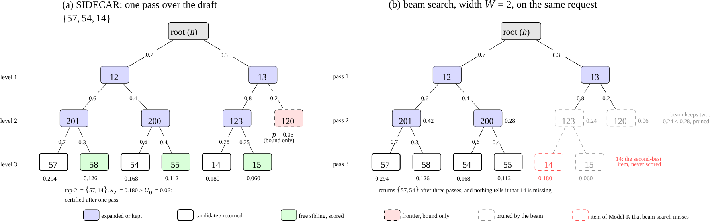
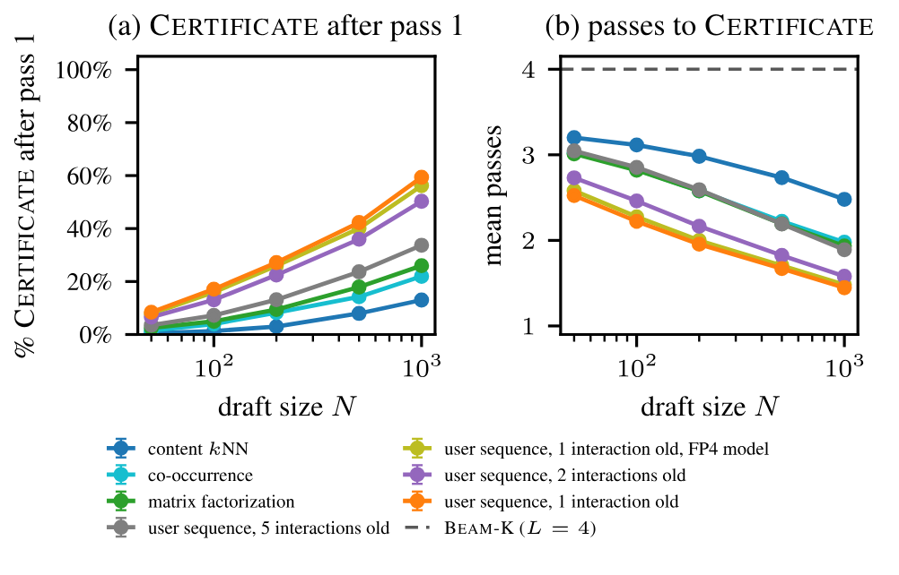
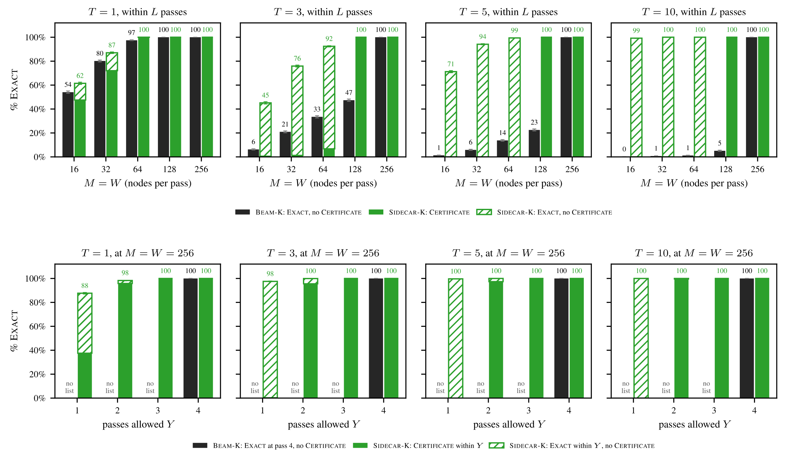

Contents · 6 sections
1Beam search finishes all three levels, prunes the true second-place item, and never knows it did. How SIDECAR confirms the list it returns is the exact top-K2After one scoring pass, a frontier upper bound confirms that the list is the exact top-K3The draft does not have to contain the top K; how good it is only decides how many passes to run4If the budget is not enough to finish, the first pass already reports how far the list is from the exact top-K5Fewer calls and less memory are not the same result: a sharp model saves passes, and once it flattens, what it saves is memory6If you already run constrained beam search, which requests should you check first against the exact top-K?SHARE
Beam search finishes all three levels, prunes the true second-place item, and never knows it did. How SIDECAR confirms the list it returns is the exact top-K
Start with one request, looking for the two highest-probability items. The model represents each item as a 3-token code and generates it level by level. Constrained beam search runs at width 2, keeping only the two highest-probability prefixes at each level, and returns a list only after all three levels finish.
At the first level, 12 gets probability 0.7 and 13 gets 0.3, so both stay. The second level splits them into four prefixes: 201 at 0.42, 200 at 0.28, 123 at 0.24, and 120 at 0.06. Beam search keeps 201 and 200; prefix 123 loses because 0.24 is below 0.28 and is dropped on the spot. The third level scores only under the two surviving prefixes and returns {57, 54}: item 57 via 12→201→57 at probability 0.7×0.6×0.7=0.294, and item 54 at 0.168.
Item 14 sits under the pruned prefix 123 along 13→123→14, with probability 0.3×0.8×0.75=0.180. That beats 54, making 14 the true second-place item. All three model calls are already spent, and beam search leaves the system with no signal that the ranking is wrong.
In industry, generative recommenders usually pull candidates this way online. Each item is compressed into a discrete code of length L, which the paper calls a Semantic ID (SID). From the user history, the model predicts the code token by token, and online serving runs beam search constrained to the tree of valid SIDs. That locks in the serving cost: every request runs L serial model passes, and nothing comes back until the last pass ends. The paper reproduces this setup on the Beauty category of Amazon Reviews 2014 with SIDs of length 4, so beam search runs 4 passes on every request. Worse, once the generator's distribution is not sharp enough, beam search can drift from the model's true top-K, and online you have no way to tell whether it has.
After one scoring pass, a frontier upper bound confirms that the list is the exact top-K
SIDECAR does not search from scratch. When a request arrives, it starts from a draft: candidates from a first-stage retriever, or a precomputed list stored in a KV cache by a batch job, such as the top-N the model ranked on a slightly older history. The draft does not have to contain the true top K.
It inserts the draft items into a candidate tree and runs one forward pass with a tree attention mask. Borrowing that mask from speculative decoding verifies the entire draft tree at once: each node attends only to the user history, its ancestors, and itself, producing the same output as running that path alone. After that single pass, the model's distribution is available at every internal node of the tree.
Because decoding is constrained to valid SIDs, that single pass picks up two things for free. Siblings of the draft items get scored alongside them with no extra tokens: if the draft holds 57, 54, and 14, the neighboring 58, 55, and 15 receive exact scores as a side effect. At every expanded node, any valid child left unexpanded forms a frontier prefix, whose probability upper-bounds every item beneath it. On this request, 120 is the only unexpanded prefix, with an upper bound of 0.06.
Side by side, the list has already changed:
| Item or prefix | Probability | Width-2 beam | SIDECAR's first pass |
|---|---|---|---|
| 57 | 0.294 | Kept, treated as first | Exact score, first |
| 14 | 0.180 | Pruned with prefix 123 at the second level, never scored | Exact score, second |
| 54 | 0.168 | Kept, treated as second | Scored, ranks third |
| Unexpanded prefix 120 | Upper bound 0.06 | Pruned at the second level | Upper bound 0.06, below second place |
(L=3, K=2)
The current second-place item has an exact score of 0.180. No unscored item, whichever frontier it hangs under, can beat the heaviest frontier's probability. Here the heaviest upper bound is 0.06, already below 0.180. Nothing left unscored can break into the top two, so {57, 14} is the model's own top-2. The paper writes this check as a certificate: as long as the exact score of the K-th item is at least the maximum frontier upper bound, the current list is the exact top-K.

You do not have to take the draft's scores on faith. The draft can miss items, and the frontier upper bound tells you directly whether any missed item can still displace the list. The draft does not even need to contain the true top K. Landing in the right prefixes is enough: siblings get scored for free, and if the uncovered probability is already below the K-th item, the certificate still holds.
If the first pass fails to certify, some frontier still outweighs the current K-th item, so a higher-scoring item may be hiding underneath. The decoder then falls back, expanding only those open prefixes while reusing the cached history and ancestors. Each level deeper, the K-th score only rises or stays, and the maximum frontier only falls or stays. Regardless of draft quality, after at most L passes the returned list is guaranteed to be the exact top-K. On the request above, the first pass already clears the check, so fallback never runs.
Beam search has nothing like this. On some requests it can happen to return the right list, yet without an upper bound it cannot tell a right answer from one that missed an item.
The draft does not have to contain the top K; how good it is only decides how many passes to run
Given enough memory to finish fallback, draft quality affects pass count, not exactness. What drives the pass count is the probability left unscored after the first pass, which the paper calls hidden probability. If hidden probability is below the model's K-th probability, the first pass certifies right away. Even when it is a little higher, the certificate often still holds as long as that mass is spread across many light prefixes. In the paper's measurements, most requests still certify on the first pass even when hidden probability reaches 8 times the threshold.
The paper tests this on Amazon Beauty: a catalog of 12,101 items, SIDs that are 4 tokens long, and a four-layer transformer with about a million parameters. For each held-out user, the authors first walk all 21,091 internal nodes of the catalog tree under that request's history and store that request's exact distributions. Every later decode of the same request then replays against this table, so each request can be checked one by one for whether the certificate was computed wrongly. Under the default setting of 10,000 held-out users, a draft of 500 items, and top-10, every draft source returns an exact list. Only the pass count changes.
The draft best aligned with the model is the batch-precomputed user sequence. Do not let the name mislead you: it means the top-N the model ranked on a history one step older, not the items the user clicked. It averages about 1.7 passes, and about 40% of requests certify on the first pass. Generating that same list with an FP4-quantized copy of the model adds only about 0.03 passes, even though its weights deviate by 11% in relative terms and its top-10 matches the full-precision model on only 69% of requests. Matrix factorization and co-occurrence drafts from interaction logs take about 2.2 passes. Content neighbors of the five most recent interactions approach 3 passes, with fewer than 10% of requests certifying on the first pass at 500 candidates. In the same setup, constrained beam search always spends 4 passes per request.

That 1.7 passes is an average, not "every request is exact after one pass." Recall of the held-out item does not explain this pass ranking either: matrix factorization and the user sequence have nearly identical recall, yet matrix factorization still needs about half a pass more. The better offline signal is coverage, the summed probability of the draft items under the model's distribution from one step earlier. Because the batch job already computes that table when writing the user sequence, you can read coverage before going online. Across draft sources and sizes in the paper, average passes fall onto the same curve against coverage, letting you screen drafts offline rather than shipping them first to count calls.
If the budget is not enough to finish, the first pass already reports how far the list is from the exact top-K
Online, a single request never gets unbounded memory. You cap it up front: at most M nodes per pass, and at most Y passes per request. When Y equals the SID length and M equals the beam width, the two resources line up with constrained beam search. The paper calls this budgeted variant BUDGET-SIDECAR.
The first pass still scores as much of the draft as fits, even if it cannot cover the whole draft. Right after that pass ends, before spending the rest of the budget, the system can announce a factor 1+δ. The comparison is at the same rank: the probability of the model's true k-th item is at most 1+δ times the exact score of the k-th item in the returned list, and δ is 0 when the list is exact. This announcement is a guarantee for the list after the planned remaining passes, within a total of at most Y passes. You can set the target to exactness (δ is 0) or allow a looser threshold. The threshold only enables early stopping and will not consume more of the budget.
This factor is a worst-case guarantee. It assumes the outputs unseen in the first pass split in the worst possible way for fallback, whereas a real model is usually far less adversarial. On the budgets the paper measured, the realized gap for the user sequence was 0: the list was already exact, and at worst the certificate had not landed yet. When the announced factor looks wide, do not read it as a measured real gap. It is simply the bound the system can commit to up front.
When the announced factor is well above 1, that signal is often the most useful output of the first pass. It warns the system that the current budget cannot return a verifiable exact list, and indicates how many extra passes or how much more memory per pass would be needed to obtain the certificate. If the system returns now and does not run the planned remaining passes, the current list can only carry the present gap — the heaviest frontier upper bound over the K-th exact score, minus one — which may be looser than the announced factor. The announced factor is honored only after those planned passes; the system can also promote the request to a larger budget tier. Beam search has nothing to say at that stage. Hoot says

This only contrasts the two paths after the first pass on the same request and introduces no new numbers; 1+δ, Y, and the K-th item are from this section of the article.
Source
Paper Proposition 2: after any round, the current list is within 1+gap at every rank; §4 calls the smallest δ that can be stated after the first pass the announced factor, which holds for the list after the planned remaining budget. The article distinguishes the current gap from that announced factor.To cover the worst case, planning reserves some fallback nodes for prefixes not yet known to be open. Compared with expanding only already-known open prefixes, the user sequence shows unchanged overlap at medium memory and above, and drops by only 1 to 2 percentage points at the smallest memory tier. Even there, the announced factor is already large enough to flag that memory is insufficient.
Fewer calls and less memory are not the same result: a sharp model saves passes, and once it flattens, what it saves is memory
Compare BUDGET-SIDECAR against constrained beam search under the same resources, and the conclusion splits depending on how sharp the model is.
The trained model is relatively sharp. Both decoders reach exact lists together and need the same memory per pass, so looking only at the lists shows no difference. The gap is the certificate and the number of passes. From medium memory onward, SIDECAR certifies almost every request, whereas beam search cannot produce a certificate at any width. With per-pass memory fixed at the beam width (256 nodes per pass in the paper), SIDECAR can return the list within two passes. On the trained model (T=1), 88% of requests already hold the true top-10 after one pass, when beam search still has no list. One pass later, 98% of the lists are certified, while beam search has to wait until the 4th pass to return anything. Those percentages are marked directly in the leftmost cell of the bottom row of the figure below. Relative to an SID of length 4 under matched memory, that is no more than half as many calls, not faster per-step execution. Certification also often takes one more pass after the list is already exact.

Once the model flattens, the advantage shifts to the memory axis. The paper applies a temperature to each conditional distribution, with T=1 as the trained model and higher temperatures flattening it. Unlike applying temperature to a single softmax in a language model, here every level is retempered on its own prefix and renormalized only over valid children, so item rankings can change. The authors use this as a proxy for generators with broader conditionals, as in large-scale recommendation.
On a flat model, the top-K often sits in a small subtree, sharing mass with a few siblings, and is not necessarily hanging under the heaviest branches. In the trained model, the branches holding the top-10 belong to the heaviest group. In the flattest model, those branches carry only median probability, and every one of them is smaller than the median size. Because beam search keeps prefixes by probability, it holds onto heavy branches and drops the lighter ones hiding the head items until the width nearly covers the branching. Across the temperature sweep, the beam width needed for a median request to get an exact list grows more than 10 times. From medium flatness onward, the width needed for 95% of requests already hits the maximum tested, and you can only know that width after the fact. SIDECAR's draft points straight at items: with the user sequence it holds at 2 passes on flat models, while the matrix-factorization draft tends to 3 passes.
On the trained model, both methods take roughly the same memory, and SIDECAR wins on call count. Once the model flattens, beam search's memory requirement keeps climbing while SIDECAR's stays flat, opening a gap of more than an order of magnitude and reaching 10 to 26 times at the flat end. That gap demonstrates how many requests each machine can hold at once, not that each step runs faster under the same load. The paper states what would change at production scale: the catalog trie would have thousands of level-1 clusters and a skeleton far larger than a pass can hold, so the unlimited-memory results no longer apply, and the budgeted results of Section 4 describe the decoder.
In this setup, when the resources are enough to finish, every request can leave with a verifiable exact list; when the budget is not enough, it can also announce a factor in advance; the numbers come from replay on Amazon Beauty, SIDs of length 4, and ten thousand requests.
If you already run constrained beam search, which requests should you check first against the exact top-K?
If you already run constrained beam search on an SID generator, do not rush to swap the model. Sample a batch of requests and compare your current width against a wider beam, or against exhaustive scoring if the catalog is still small, and see on which requests the current width disagrees with the reference, especially where the conditional distributions are already spread out. A wider beam can only reveal some disagreements, because it can itself miss the true top-K; to measure how often this kind of mistaken pruning shows up, you need exhaustive scoring, or a certified exact top-K, as the reference.
If you already pull first-stage candidates online, or keep a batch-computed top-N from an older history, compute that draft's offline coverage. Coverage does not guarantee that recommendation metrics will improve, but it gives you an upfront estimate of roughly how many passes SIDECAR scoring would take. After the first pass, whenever the heaviest unexpanded prefix is no higher than the K-th item's exact score, you can confirm the list is exact. When it is not, you can at least flag the requests that returned a list without being verified.
How did this read for you?
Hoot made a note. Thanks for the feedback.
One tap, no sign-in; tap again to undo. Only anonymous counts are kept, never who you are.
Discussion
Add experiment details, reproduction notes or a different take. Requires a GitHub sign-in.
Loading the discussion…